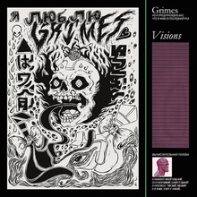
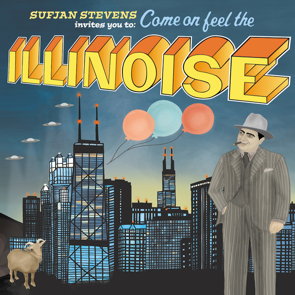
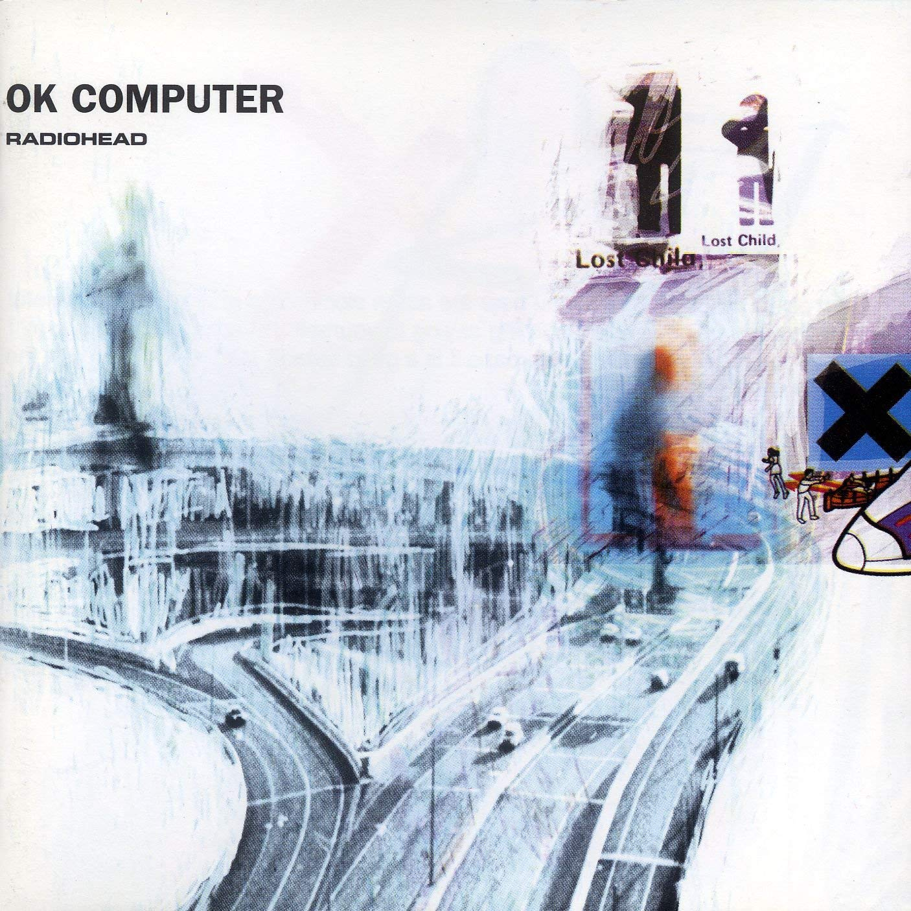
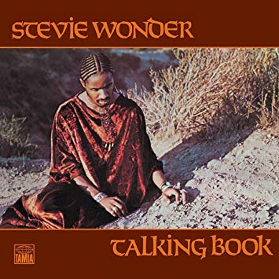
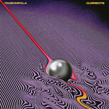
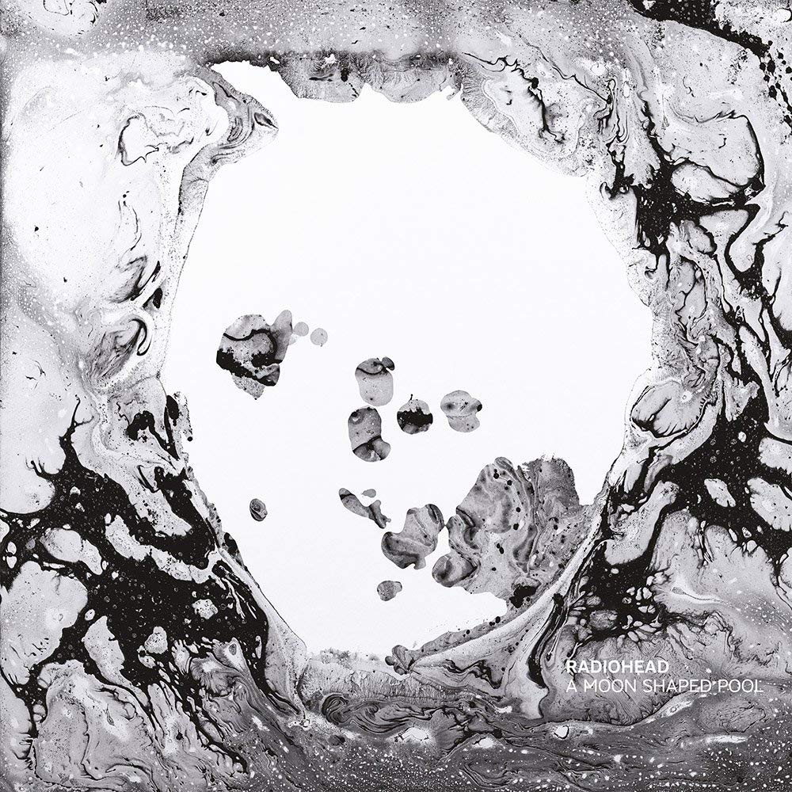
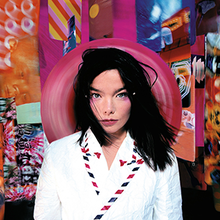
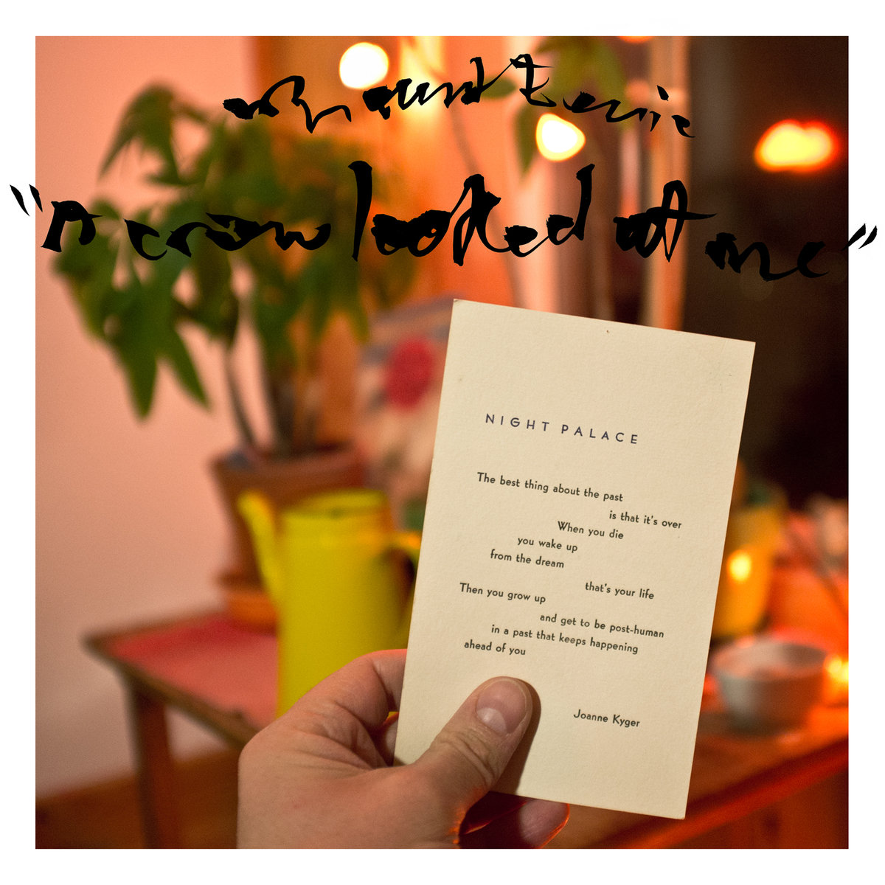
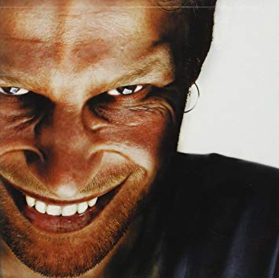

In Rainbows
Radiohead - 10/10
Radiohead - 10/10

Vespertine
Bjork - 10/10
Bjork - 10/10

Q:Are We Not Men? A: No We Are Devo!
Devo - 10/10
Devo - 10/10

Meat Is Murder
The Smiths - 9.5/10
The Smiths - 9.5/10

Endless
Frank Ocean - 8.5/10
Frank Ocean - 8.5/10

Kid A
Radiohead - 10/10
Radiohead - 10/10

Visions
Grimes - 7.5/10
Grimes - 7.5/10

Illinois
Sufjan Stevens - 10/10
Sufjan Stevens - 10/10

OK Computer
Radiohead - 9.5/10
Radiohead - 9.5/10

Talking Book
Stevie Wonder - 6.9/10
Stevie Wonder - 6.9/10
Homogenic
Bjork - 8.9/10
Bjork - 8.9/10

Currents
Tame Impala - 8.1/10
Tame Impala - 8.1/10

Blond
Frank Ocean - 8.7/10
Frank Ocean - 8.7/10

A Moon Shaped Pool
Radiohead - 8.5/10
Radiohead - 8.5/10

Post
Bjork - 8/10
Bjork - 8/10

A Crow Looked At Me
Mount Eerie - 6.8/10
Mount Eerie - 6.8/10
Medulla
Bjork - 8.3/10
Bjork - 8.3/10

Richard D. James Album
Aphex Twin - 8.8/10
Aphex Twin - 8.8/10
- Radiohead, Kid A (2000)
- Bjork, Vespertine (1999)
- Radiohead, In Rainbows (2007)
- Kendrick Lamar, To Pimp a Butterfly (2015)
- Talking Heads, Remain in Light (1980)